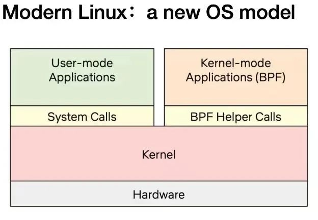

Wasm-bpf: Bridging WebAssembly and eBPF for Kernel Programmability
Authors: Yu-Sheng Zheng, Mao-Lin Chou
Wasm was initially developed as a secure sandbox for browsers, and has since evolved into a high-performance, cross-platform, and multi-language software sandbox environment for cloud-native software components. The lightweight containerization provided by Wasm also makes it a suitable runtime for the next generation of serverless platforms. Another exciting trend is the rise of eBPF, which enables cloud-native developers to build secure networking, service mesh, and observability components. It is gradually penetrating and deepening into various components of the kernel, providing more powerful programmable interaction capabilities in kernel space.
Wasm-bpf is a new open-source project[1] that defines a set of abstract eBPF-related system interfaces and provides a corresponding development toolchain, library, and a universal Wasm + eBPF runtime platform instance. This allows applications in any Wasm virtual machine or Wasm lightweight container to sink and extend their use cases into kernel space, gaining access to almost all data from both kernel and user space. This enables programmable control at the entire operating system level in multiple areas such as networking and security, greatly expanding the applications of the WebAssembly ecosystem outside the browser.
Bringing More Possibilities to Cloud-Native WebAssembly with eBPF-based System Interfaces
Wasm & WASI
You may have heard Solomon Hykes (co-founder of Docker) say:
"If we had WebAssembly + WASI in 2008, we probably wouldn't have needed to create Docker. That's how important and powerful WebAssembly is. It's the future of compute on the server."
In 2022, WebAssembly (often abbreviated as Wasm) has become a focal point: new Wasm startups emerging, established companies announcing support for Wasm, Bytecode Alliance releasing numerous Wasm standards, Cloud Native Computing Foundation hosting two WasmDay events, and one of the largest Wasm users, Figma, being acquired by Adobe for an astounding $20 billion[2].
Wasm is a binary format that many different languages can compile to, and this binary format can run on a wide range of operating systems and architectures. Java and .NET have similar capabilities, but there is a crucial difference with Wasm: the Wasm runtime does not trust the binary being executed. Wasm applications are isolated in a sandbox and can only access the resources explicitly allowed by the user, such as files or environment variables. Wasm also has many other ideal features (e.g., excellent performance), but it is its security model that enables Wasm to be used in a wide range of environments, from browsers to edge/IoT devices, and even to the cloud[3].
Since we cannot rely on existing JavaScript engine interfaces available in browsers, most Wasm lightweight containers running outside the browser currently need to use WASI (WebAssembly System Interface). These runtimes allow Wasm applications to interact with their host operating systems in a similar (but not identical) way to POSIX.
However, compared to traditional containers that can use almost any system call, the system resources that WASI can provide are very limited. It currently only offers basic support in areas such as file systems and socket network connections. There are still many gaps in terms of access, control, and management of low-level operating system resources. For example, there is no mature solution for limiting and observing resource usage and behavior of Wasm modules or external processes, fast packet forwarding and processing, or communication with external processes and access to peripherals. This limitation currently restricts most Wasm lightweight containers to compute-intensive applications, while relying on traditional container technologies for networking, security, and other aspects.
This is why we started the Wasm-bpf project: to leverage the system interfaces provided by the current kernel-space eBPF and the ability to interact with user space, expanding the blueprint of the entire WASI ecosystem and bringing more possibilities to Wasm applications. At the same time, this approach also enhances the capabilities of eBPF programs in user space.
In other words, just as Wasm programs running in browsers can access various system resources provided by the browser through JavaScript engine interfaces, the Wasm-bpf solution allows Wasm applications and containers to access various system resources in the kernel through the eBPF virtual machine interface. Thanks to the broad support for eBPF in the Linux kernel, as well as its portability between different kernel versions and architectures, and the reliability of the kernel BPF verifier engine, we can still ensure application portability and security boundaries to a certain extent.
Wasm-bpf: A Lightweight Wasm + eBPF Runtime Platform
The Wasm-bpf project has implemented a complete abstraction mechanism for the system interfaces between the kernel-space eBPF virtual machine and user space. It provides a toolchain to compile eBPF applications into Wasm modules and facilitates efficient bidirectional communication between eBPF programs and Wasm modules through shared memory, without the need for serialization. Leveraging code generation techniques, it offers a consistent and convenient development experience similar to other user space eBPF development frameworks. With the evolving ecosystem of Wasm component models, Wasm-bpf enables the integration, reuse, and unified management of eBPF applications and data processing plugins from different languages for observability, networking, and other eBPF use cases.
With libbpf, which has become the de facto API standard for eBPF in user space, and on top of WAMR (wasm-micro-runtime), a complete universal Wasm-eBPF runtime component can be built with just over 300 lines of code. It supports most eBPF use cases and allows anyone using any mainstream Wasm runtime, any eBPF user space library, or any programming language to easily add corresponding virtual machine support and effortlessly implement Wasm-eBPF programs without significant changes.
There have been previous explorations of combining eBPF and Wasm in the eunomia-bpf project[4], but it was not designed for native Wasm applications and lightweight containers. It did not conform to the generic programming model of Wasm-eBPF and had lower performance. Therefore, we created a new repository and focused on leveraging eBPF to enhance and extend the use cases of WebAssembly, while also improving the toolchain and development library support for Wasm-eBPF. In turn, a generic Wasm-eBPF development framework, leveraging the Wasm-related ecosystem, can also provide more possibilities for the eBPF community in user space.
eBPF: Safely and Effectively Extend the Kernel
eBPF is a revolutionary technology that originated in the Linux kernel and allows sandboxed programs to run in the kernel of an operating system. It is used to safely and effectively extend the functionality of the kernel without changing its source code or loading kernel modules. By enabling the runtime programmability of the operating system through sandboxed programs, application developers can dynamically add additional functionality to the operating system at runtime. The operating system guarantees security and performance, as if it were natively compiled with just-in-time (JIT) compilation and a verification engine. eBPF programs are portable between kernel versions and can be automatically updated, avoiding workload disruption and node restarts.
Today, eBPF is widely used in various scenarios: high-performance network packet processing and load balancing in modern data centers and cloud-native environments, fine-grained observability with very low resource overhead, providing insights for performance troubleshooting, and ensuring secure execution of applications and container runtimes, to name a few. The possibilities are endless, and the innovation released by eBPF in the Linux kernel has just begun[3].
The Future of eBPF: Kernel's JavaScript-like Programmable Interface
JavaScript's introduction to browsers brought programmability and sparked a revolution, making browsers develop into almost independent operating systems. Now let's go back to eBPF: to understand the impact of eBPF's programmability on the Linux kernel, it is helpful to have a high-level understanding of the structure of the Linux kernel and how it interacts with applications and hardware[4].

The main purpose of the Linux kernel is to abstract the hardware or virtual hardware and provide a consistent API (system calls) that allows applications to run and share resources. To achieve this goal, we maintain a series of subsystems and layers to allocate these responsibilities[5]. Each subsystem typically allows some degree of configuration to cater to different user needs. If the desired behavior cannot be configured, changes to the kernel or running programs can be made to run in the kernel.
| Support kernel module natively | Writing a kernel module |
|---|---|
| Modify the kernel source code and convince the Linux kernel community of the change | Fix it periodically because each kernel version could break it. Security issues! |
In reality, neither option is commonly used. The former is too costly, and the latter lacks portability.
With eBPF, there is a new option to reprogram the behavior of the Linux kernel without changing its source code or loading kernel modules, while maintaining a certain level of consistency and compatibility between different kernel versions and ensuring security[6]. To achieve this, eBPF programs also need a corresponding API that allows user-defined applications to run and share resources within the kernel— in a sense, the eBPF virtual machine also provides a set of system call-like mechanisms. Through the communication mechanism between eBPF and user space, Wasm virtual machines and user space applications can have full access to this "system call", allowing them to programmatically extend traditional system call capabilities and implement more efficient programmable IO handling in various layers such as networking and file systems.

Today's Linux kernel is evolving towards a new model: user-defined applications can run in both user space and kernel space. User space interacts with the kernel through traditional system calls, while kernel space interacts with user space and other kernel components through BPF helper calls. As of early 2023, the eBPF virtual machine in the kernel already has over 220 helper interfaces, covering a wide range of application scenarios.
It is worth noting that BPF helper calls and system calls are not competing with each other. Their programming models and performance advantages are completely different. They do not completely replace each other. The same goes for the Wasm and Wasi ecosystems. Although a specially designed wasi interface needs to go through a lengthy standardization process, it may provide better performance and portability guarantees in specific scenarios. On the other hand, eBPF can provide a fast and flexible extension to the system interface while ensuring the sandbox nature and portability of the Wasm environment.
Currently, with the system interfaces provided by eBPF in the kernel and the ability to interact with user space, Wasm applications in Wasm-bpf can almost have the ability to access the data and return values of any function call in both kernel and user space (kprobe, uprobe, etc.). It can collect and understand all system calls with low overhead and obtain data packets and socket-level data for all network operations (tracepoint, socket, etc.). Additional protocol analyzers can be added in networking solutions, and any forwarding logic can be programmed easily (XDP, TC, etc.) without leaving the environment of packet processing in the Linux kernel.
Moreover, eBPF has the ability to write data directly to the arbitrary address of any user space process (bpf_probe_write_user[7]), moderately modify the return value of kernel functions (bpf_override_return[8]), and even execute certain system calls directly in kernel space[9]. Fortunately, the eBPF bytecode undergoes strict security checks before being loaded into the kernel, ensuring that there are no memory overflows or other unsafe operations. Moreover, many functionalities that could expand the attack surface or introduce security risks require explicit enablement during kernel compilation. Similarly, specific eBPF features can be selectively enabled or disabled before loading the bytecode into the Wasm virtual machine, ensuring the security of the sandbox.
All of these scenarios can be implemented within the Wasm lightweight container: unlike traditional Wasm usage as a data processing or control plugin, where these steps are implemented by logic outside the Wasm virtual machine, now they can be implemented within the Wasm lightweight container to access almost all system resources accessible by eBPF and provide complete control and interaction in both user and kernel space. Real-time generation of eBPF code can be used to change the behavior of the kernel logic, extending the programmability from user space to kernel space.
Wasm's User-Space Enhancements for eBPF: Component Model
Standards are rarely the most exciting part of an ecosystem. And with a name like "component model," it is indeed a challenging task to generate excitement. However, behind this boring name lies the most important innovation that Wasm brings to the software world.
The component model describes how Wasm binary modules interact with each other. More specifically, two components can tell each other what services they provide and what expectations they need to fulfill. Then, Wasm modules can utilize each other's capabilities. This provides a new way for software developers to build applications. Developers can declare the components (or more abstractly, functionalities) that an application needs, and the Wasm runtime can assemble the correct set of components on behalf of the user. The component model is rapidly maturing and reference implementations have started to emerge. The year 2023 will be the year when the component model begins to redefine how we write software[10].
Leveraging the Wasm ecosystem, especially Wasm-based lightweight container technology and component models, we can also empower eBPF applications with the following features:
Portability: Make eBPF tools and applications completely platform-independent and portable, without the need for recompilation for cross-platform distribution.Isolation: Utilize the reliability and isolation capabilities of Wasm to make the loading and execution of eBPF programs and the data processing flow in user space more secure and reliable. In fact, the portion of eBPF application code controlling user space is usually much larger than the portion running in kernel space.Package Management: Use the Wasm ecosystem and toolchain to distribute, manage, load, and run eBPF programs or tools. Currently, the eBPF program or tooling ecosystem lacks a universal package management or plugin management system.Language Independence: Currently, eBPF programs are developed using various user space languages (such as Go, Rust, C, C++, Python, etc.), and more than 30 programming languages can be compiled into WebAssembly modules. This allows developers from different backgrounds (C, Go, Rust, Java, TypeScript, etc.) to write user space eBPF programs in their chosen language, without the need to learn a new language. We can even dynamically translate Wasm into eBPF programs and load them into the kernel or directly generate eBPF bytecode within the Wasm lightweight container.Agility: For large eBPF applications, Wasm can serve as a plugin extension platform: extensions can be delivered and reloaded directly from the control plane at runtime. This means that anyone can load custom extensions with official and unmodified applications, and any bug fixes and/or updates to any eBPF program can be pushed and/or tested at runtime without the need for updating and/or redeploying a new binary. For observability applications that require updating data processing plugins, there is no need to go through the process of recompiling and deploying the entire application.Lightweight: WebAssembly microservices consume 1% of the resources compared to Linux container applications, and the cold start time is only 1% compared to Linux container applications. For scenarios with a large number of small eBPF programs that need to be quickly deployed and stopped, the lightweight nature of Wasm greatly reduces system resource overhead.
We have already made attempts to create Wasm-eBPF applications compliant with the OCI standard, utilizing ORAS to simplify the development, distribution, loading, and running of eBPF applications in the eBPF Hub of the LMP project[11]. We have also practiced developing user space data processing plugins for eBPF using multiple different languages simultaneously based on Wasm. With the latest Wasm-bpf framework, there are more exploratory possibilities to be pursued.
Interaction Flow Between User Space and eBPF Programs
eBPF programs are event-driven and run specific eBPF programs when a hook point is reached in the kernel or a user space application. To use an eBPF program, we first need to compile the corresponding source code to BPF bytecode using the clang/LLVM toolchain, which includes the definition of data structures, maps, and program segments (progs). Progs represent the program segments, and maps can be used to store data or communicate with user space. Next, we can use user space development frameworks and loading frameworks to implement a complete eBPF application.
Typical User Space eBPF Development Framework
For a complete eBPF application, we typically need to include both user space and kernel space components:
- User space programs interact with the kernel through a series of system calls (mainly bpf system calls), create the corresponding maps to store data in kernel space or communicate with user space, dynamically load different program segments based on configuration, dynamically modify bytecode or configure eBPF programs, load the bytecode information into the kernel, ensure security through a verifier, and implement bidirectional communication with the kernel through maps. Data can be passed from kernel to user space (or vice versa) using mechanisms such as ring buffers or perf buffers.
- The kernel space is responsible for specific computation logic and data collection.

A New eBPF Development Framework Built on User Space Wasm-eBPF System Interfaces
This project can be seen as using the Wasm sandbox as another user space runtime built on top of the operating system, allowing Wasm applications to implement the same programming model and execution logic as typical user space eBPF applications. Wasm-bpf requires a runtime extension built outside the sandbox (the host) as well as runtime libraries compiled into Wasm bytecode within the sandbox to provide full support.

To achieve a comprehensive development model, we need:
- A Wasm module can correspond to multiple eBPF programs.
- An eBPF program instance can be shared by multiple Wasm modules.
- The eBPF program can be dynamically loaded into the kernel from the Wasm sandbox, select the desired mount point, mount or unmount, control the complete lifecycle of multiple eBPF bytecode objects, and support most eBPF program types.
- Support various types of maps and bidirectional communication with the kernel, supporting most maps types.
- Efficiently send information from kernel space to user space through ring buffers and perf event polling (or vice versa).
- Almost adaptable to all use cases using eBPF programs, with the ability to evolve and extend as kernel functionality evolves, without changes to the Wasm virtual machine system interface.
This is the work that the Wasm-bpf project is doing. We have also proposed a new proposal for WASI: WASI-eBPF[12].
In the Wasm-bpf project, all communication between the Wasm and eBPF virtual machines does not require serialization/deserialization mechanisms. With code generation techniques and support for BPF type format (BTF) information in the toolchain, we can achieve correct communication between different memory layouts, endianess, and pointer widths between eBPF and Wasm, with almost no additional overhead at runtime. When communicating through eBPF maps, data can be directly copied from kernel space to the memory of the Wasm virtual machine, avoiding additional overhead from multiple copies. Additionally, by automatically generating eBPF program skeletons (bpf code framework) and type definitions, the development experience for eBPF-Wasm programs in user space has been significantly improved.
Thanks to the CO-RE (Compile-Once, Run Everywhere) technology provided by libbpf, there is no need to introduce additional recompilation processes when porting eBPF bytecode between different kernel versions, and there are no dependencies on LLVM/Clang in the runtime[14].
A compiled eBPF-Wasm module typically only has a size of around 90Kb and can be dynamically loaded into the kernel and executed within less than 100ms. We provide several examples in the repository, corresponding to various scenarios such as observability, networking, and security, written in C/C++ or Rust.
Thanks to the guidance and help from Associate Professor Xiaozheng Lai's team at South China University of Technology, Professor Lijun Chen's team at Xidian University, and Mr. Pu Wang and Mr. Jicheng Shi from Datan Technologies for combining Wasm and eBPF, we will continue to conduct further research and exploration on specific Wasm-bpf application scenarios with the students participating in the 2023 open-source capstone journey. In the next blog post, we will provide a more detailed analysis of the principles, performance, and corresponding code examples.
The Wasm-bpf compilation toolchain and runtime module are currently developed and maintained by the eunomia-bpf open-source community[16], which is incubated by the eBPF Technology Exploration SIG[15] of the Lizard community. We would like to thank the PLCT Laboratory of the Institute of Software, Chinese Academy of Sciences for their strong support and funding for the community, as well as the contributions from community members. Moving forward, we will continue to improve and explore the corresponding Wasm and eBPF-related toolchains and runtime components and actively contribute to the upstream community.
References
- [1] wasm-bpf GitHub repository: https://github.com/eunomia-bpf/wasm-bpf
- [2] WebAssembly: Docker Without Containers: https://zhuanlan.zhihu.com/p/595257541
- [3] Cloud Native Project Scalability Tool WebAssembly Introduction: https://mp.weixin.qq.com/s/fap0bl6GFGi8zN5BFLpkCw
- [4] When Wasm Meets eBPF: Writing, Distributing, Loading, and Running eBPF Programs with WebAssembly: https://zhuanlan.zhihu.com/p/573941739
- [5] https://ebpf.io/
- [6] What is eBPF: https://ebpf.io/what-is-ebpf
- [7] Offensive BPF: Understanding and using bpf_probe_write_user: https://embracethered.com/blog/posts/2021/offensive-bpf-libbpf-bpf_probe_write_user/
- [8] Cloud-Native Security Attack and Defense: Analysis and Practice of Container Technology based on eBPF Escape: https://security.tencent.com/index.php/blog/msg/206
- [9] kernel-versions.md: https://github.com/iovisor/bcc/blob/master/docs/kernel-versions.md
- [10] 5 WebAssembly Trends Predicted for 2023: https://zhuanlan.zhihu.com/p/597705400
- [11] LMP eBPF-Hub: https://github.com/linuxkerneltravel/lmp
- [12] WASI-eBPF: https://github.com/WebAssembly/WASI/issues/513
- [13] BPF BTF Explained: https://www.ebpf.top/post/kernel_btf/
- [14] BPF Portability and CO-RE (Compile Once, Run Everywhere): https://cloud.tencent.com/developer/article/1802154
- [15] eBPF Technology Exploration SIG of the Lizard Community: https://openanolis.cn/sig/ebpfresearch
- [16] eunomia-bpf project: https://github.com/eunomia-bpf/eunomia-bpf
- [17] eunomia-bpf project on Gitee: https://gitee.com/anolis/eunomia